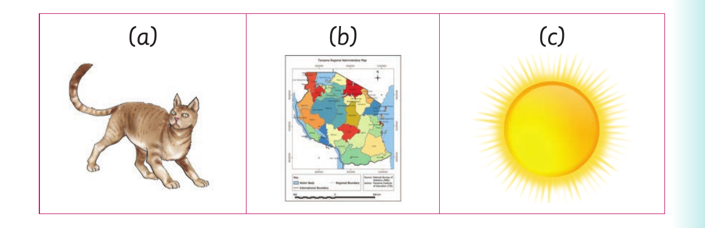

I replace initial sounds to form new words or I replace initial letters to sign new words
I replace initial sounds to form new words or I replace initial letters to sign new words.
Activity 1
1. Pronounce or sign the following words:
| rat | nap | run | fat | can | van | wag |
|---|---|---|---|---|---|---|
| log | pot | cut | cat | toy | men |
2. Replace the initial sounds of the words in (1) to form new words. Or replace the initial letters s of the words in (1) to sign new words. 3. Name the following orally or using sign language:

(a), a picture of a cat. (b), a picture of a map. (c), a picture of the sun.